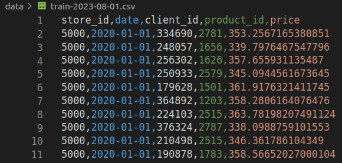

Practicing
Create folder
Use your template, created in class 01, to create a new folder for today's class. You can use any name (I chose p03-batch).
Atention
If you didn't do this part of the activity, create the folders manually.
$ cookiecutter https://github.com/macielcalebe/template-ds-maciel.git --checkout main
You've downloaded /home/calebe/.cookiecutters/template-ds-maciel before. Is it okay to delete and re-download it? [y/n] (y): y
[1/3] directory_name (project-name): p03-batch
[2/3] author_name (Your Name): Maciel
[3/3] compatible_python_versions (^3.8):
Let's check if the folders were created correctly.
Important
This is not a repository (yet). We just created the folders structure of a ML project!
Introduction
In this task, we are going to create a model for forecasting sales for five stores of a company. The model will make predictions in batch, for now called manually from terminal.
Task 1: Generating Train data
Here you can find a python script get_data.py.
Let's use this script to simulate ingesting data that will be used whenever the model needs it:
- be trained
- make prediction
Question 1
We will consider as training data from the beginning of the year 2022 until the first day of August 2023.
This will create a train-2023-08-01.csv file in the data folder containing the sales data for each company's store.
Each line in this file represents a sale made to a customer.

Task 2: Processing train file
The model will predict the total to be sold per store in one day.
So we need to process the input data to change its granularity. The expected result is a DataFrame where each line represents the total sales of a store in one day:
| store_id | total_sales | year | month | day | weekday | |
|---|---|---|---|---|---|---|
| 0 | 5000 | 62895.6 | 2023 | 1 | 1 | 6 |
| 1 | 5000 | 42351.1 | 2023 | 1 | 2 | 0 |
| 2 | 5000 | 37377.4 | 2023 | 1 | 3 | 1 |
| 3 | 5000 | 31385.5 | 2023 | 1 | 4 | 2 |
| ... | ||||||
| 1636 | 5005 | 46246.3 | 2023 | 9 | 29 | 4 |
| 1637 | 5005 | 43698.2 | 2023 | 9 | 30 | 5 |
Notice the feature weekday. It represents the day of the week, going from 0 to 6.
Question 2
Resposta
total_sales, that's what we are predicting!
Question 3
Task 3: Trainning the model
Train a model using RandomForestRegressor or any other of your preference.
from sklearn.ensemble import RandomForestRegressor
model = RandomForestRegressor(n_estimators=100, random_state=195)
model.fit(X_train, y_train)
Question 4
Task 4: Simulate predicton data
Now that the model is trained, we can use it to make predictions on future dates, having an estimate of the billing provided by each store.
Let's use our script to simulate ingesting the data for predict. You can imagine that some system task would generate a file containing the batch of data that must be used by the model to make predictions. The script will simulate this task.
Then, when it was time for the model to make predictions, the model would read the lines from this file and generate predictions of total sales.
Question 5
As the prediction is performed by store and by day, each line of this file will contain a store x day combination:
| store_id | year | month | day | weekday | |
|---|---|---|---|---|---|
| 0 | 5000 | 2023 | 8 | 2 | 2 |
| 0 | 5000 | 2023 | 8 | 3 | 3 |
| 0 | 5001 | 2023 | 8 | 2 | 2 |
| 0 | 5001 | 2023 | 8 | 3 | 3 |
| 0 | 5002 | 2023 | 8 | 2 | 2 |
| 0 | 5002 | 2023 | 8 | 3 | 3 |
| 0 | 5003 | 2023 | 8 | 2 | 2 |
| 0 | 5003 | 2023 | 8 | 3 | 3 |
| 0 | 5004 | 2023 | 8 | 2 | 2 |
| 0 | 5004 | 2023 | 8 | 3 | 3 |
| 0 | 5005 | 2023 | 8 | 2 | 2 |
| 0 | 5005 | 2023 | 8 | 3 | 3 |
Task 5: Making predictions
Question 6
Done! Whenever there is a new file that must be predicted, just call the predict.py script, informing which model to be used and the path of the file with the data! Then, the model will read this batch of information and perform the prediction.
Extra questions!
Categorical variables
Question 7
Question 8
OOT validation
How do we check if a model is good? Although for now we haven't focused much on the construction details of the models, this is an important topic worth discussing!
Info
We say that a model is good if it is performing well in unseen data.
It is common to use train_test_split to generate X_test and y_test. This is the Out Of Sample validation, where data are split in a random way.
Out-of-time (OOT) refers to evaluating the performance of a trained model on data that falls outside the time period or timeframe used for training the model. This concept is particularly relevant in scenarios where the data is time-dependent or exhibits temporal patterns (like).
Example!
If your training data are from january to july, use data from January to May for training and separate June and July to check model performance!
Tip! 1
Once you decide the model is good enough, you can retrain with the whole base (January to July) and deploy this new version of the model!
Question 9